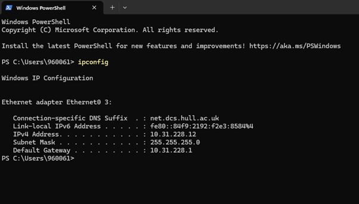
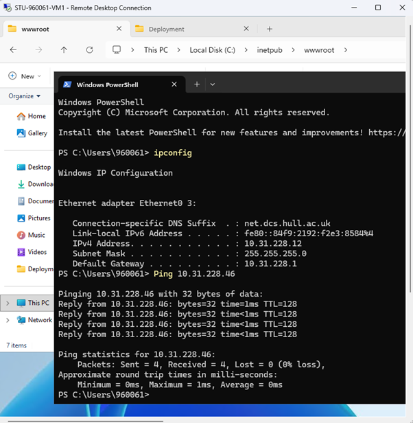
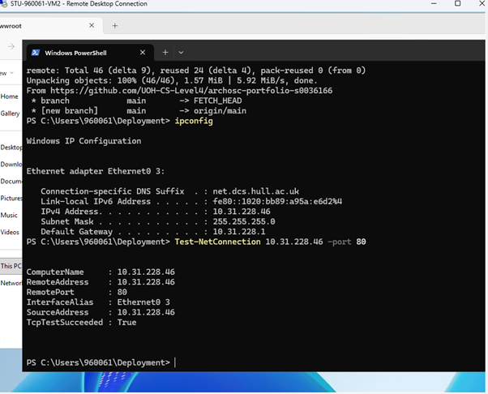
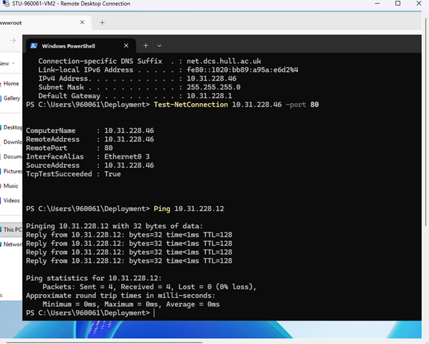
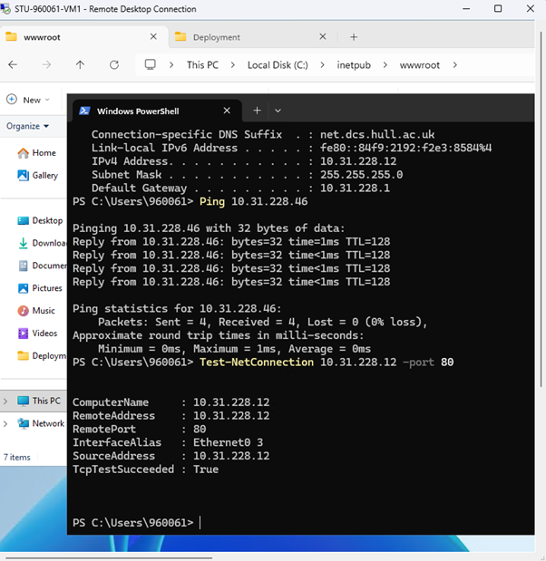
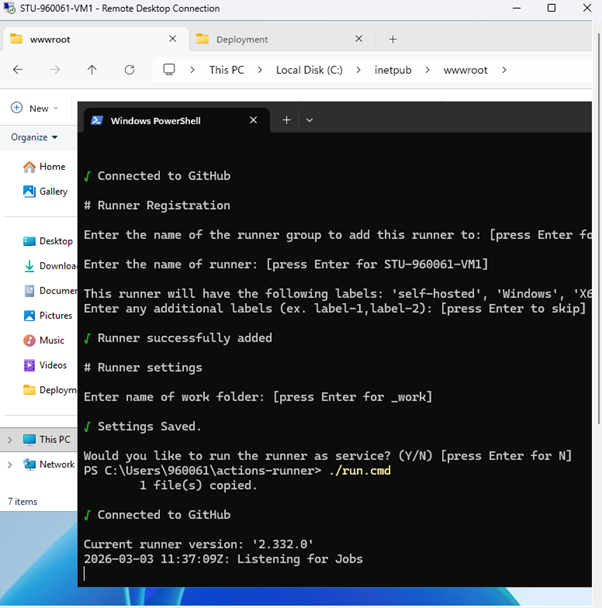
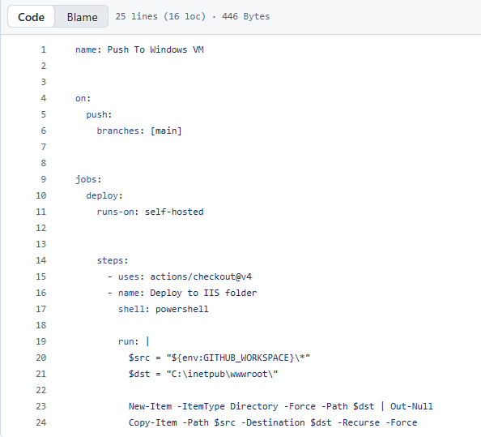

The ipconfig command in terminal shows the VM's IP address. This screenshot shows this for VM-1.

In this screenshot, VM-1 sends a packet to VM-2 and records its reply time and the amount of packet loss, if any.

This picture shows the NetConnection lookup, displaying all the relevant stats of the server.


I repeated these steps but for VM-2 to VM-1.

In this screenshot, I created a GitHub runner that is currently listening for jobs.

After, I wrote a YAML file for that runner to use to take my repository and push it onto my VM, automatically copying it into the default location for IIS.